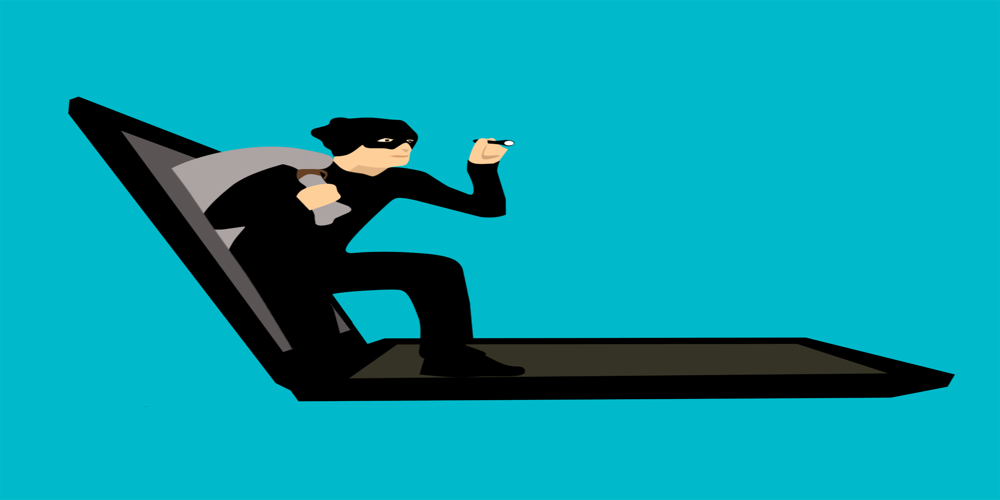

:الهاكرز
: تعريف الهاكرز .الهاكر أو قرصان أو مخترق هو شخص غامض غير محدد إتجاهه أي مجهول محترف في مجال الحاسوب إن كان يستعمل نظام الويندوز أو لينكس أو لغات برمجية أو التارمينال بما يعرف بالكونسول ليخترق الشبكات الأمنية او حاسوبك أو موقعك على الأنترنت أطلقت كلمة هاكر على مجموعة من المبرمجين الأذكياء الذين كانوا يختبرون قدراتهم بإختراق الأنظمة المختلفة و يحاولون إقتحامها ولكن كانت نيتهم أن يختبروا قدراتهم فقط و ليس سرقة المعلومات و لكن بعضهم استغلها بصور إجرامية تخريبية لسرقة المعلومات او إستغلالها تجاريا
:انواع الهاكرز

: الهاكر ذو القبعة البيضاء
هو هاكر أخلاقي مصرح له بإستخدام الوسائل الممنوعة يمارس بما يسمى القرصنة الأخلاقية هو مصطلح يطلق على الهاكرز الذين يركزون على حماية الانظمة , الاختراق الاختباري , اكتشاف تغرات , والعديد لتأمين هده الحماية
: الهاكر ذو القبعة السوداء
هو شخص غامض مجهول و رجل سيئ نواياه خبيتة يستعمل قدراته لإقتحام الشبكات أو الحواسيب او صنع فيروسات الحاسوب هدفه الاول المال و التخريب و تشويه صمعة الهاكرز
: الهاكر ذو القبعة الرمادية
هو شخص غامض غير محدد إتجاهه لانه يقف في منطقة حدودية بين الهاكر الأسود و الأبيض فممكن في بعض الحالات يقوم بمساعدتك وفي حالات أخرى تكون هدفه و ضحيته القادمة
ماهو مصير المعلومات المسروقة
: مصير المعلومات
المعلومات هي أنواع قد تكون جيميلات, باسوردات, صور, أو حتى بطاقة ائتمان, معلومات حساسة و الكتير اذ تم سرقة هده المعلومات او بما يسمى داتابايس من طرف الهاكر ذو القبعة السوداء يبيعها لشركات او يسرق أموال البطاقات الإئتمانية أو يستعمل حسابك على الجيميل أو ينشر المعلومات على غوغل أو يغير باسورد الحسابات
أنواع الإختراقات و الهجمات
: Dos | هجمات حجب الخدمة
أو بما يسمى هجوم الزومبي هو من أخطر أنواع الأختراقات حيت يتم بدون أختراق كلمات السر او سرقة البيانات السرية فهجمات حجب الخدمة تتم عن بعد حيت يقوم المهاجم بإرسال بيانات إلى المواقع بشكل كثيف مما يسبب بطء الخدمات و تعطل السيرفر وصعوبة وصول المستخدمين لها, لا يوجد علاج لهدا الاختراق حيث إزدادت قوتها و شدتها و تأتيرها التدميري عام تلو الأخر
: الثغرات الامنية
هو مصطلح يطلق على مناطق ضعيفة يمكن إختراقها لتدمير البرنامج سبب هذه الثغرات هو مطور البرنامج حيت يرتكب أخطاء برمجية وتشكل خطر على التطبيق بسبب عدم رؤيتها او اكتشافها متل ثغرة اليوم الصفر التي يستعملها الهكرز
: احصنة طروادة
المصطلح مشتق من قصة حصان طروادة في الأساطير اليونانية لأن أحصنة طروادة تستخدم شكلا من أشكال "الهندسة الاجتماعية"، وتقوم بتقديم نفسها على أنها غير مؤذية، ومفيدة، من أجل إقناع الضحايا لتثبيتها على أجهزة الكمبيوتر الخاصة بهم .حصان طروادة هو نوع من البرمجيات الخبيثة فالمستخدم يراها برامج عادية و يحملها لكي تؤدي عملها ولكن بدلا من ذلك ينسخ تطبيق خبيت حيث لا يراه المستخدم العادي قد يسرق معلومات او يتجسس عليك او يفتح كاميرا الحاسوب , حتى عند كتابتك في لوحة المفاتيح يستطيع الهاكر أن يرى ماذا تكتب بواسطة البرنامج الخبيث